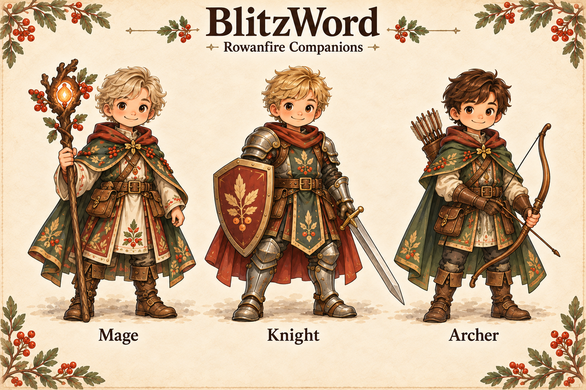

ROWANFIRE COMPANIONS
A bow drawn with purpose.
Raise. Draw. Aim. Release.
A first look at the archer’s new movement.
Ready
One attack takes 1.2 seconds. Drag the timeline to inspect any pose.
Prototype for review. The playable game and learner progress are unchanged.
Compare with the approved character
